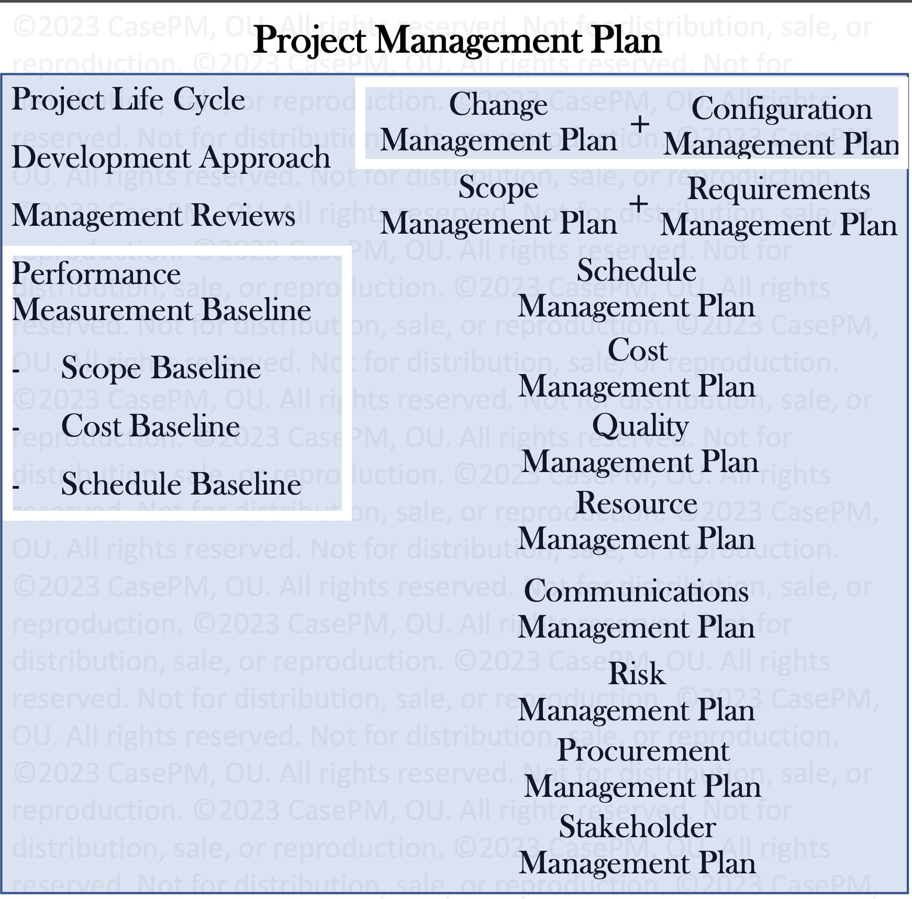
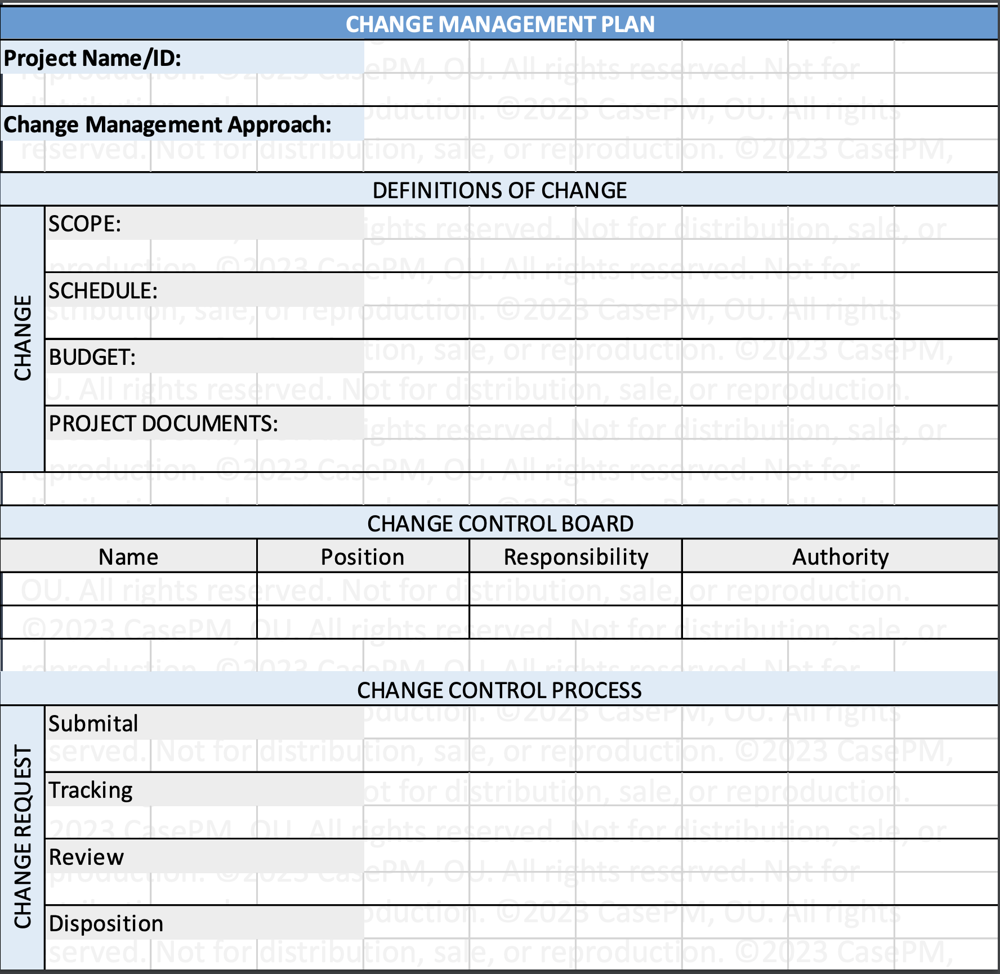

Process goups and Knowledge areas:

Outlines how the project is executed, monitored and controlled, and closed.
 | Inputs | Tools | Outputs |
|---|---|---|
| Project charter | Expert judgement | Project management plan |
| Outputs of other process | Data gathering techniques | |
| Enterprise environmental factores | Interpersonal and team skills | |
| Organisation process assets | Meetings |
Process of creating a scope management plan that documents how the project and product scope will be defined, validated, and controlled. It gives guidance and direction on how scope will be managed throughout the project
| Inputs | Tools | Outputs |
|---|---|---|
| Project charter | Expert judgement | Scope management plan |
| Project management plan | Data analysis | Requirements management plan |
| Enterprise environmental factores | Meetings | |
| Organisation process assets |
Process of determining, documenting, and managing stakeholder needs and requirements to meet objectives.